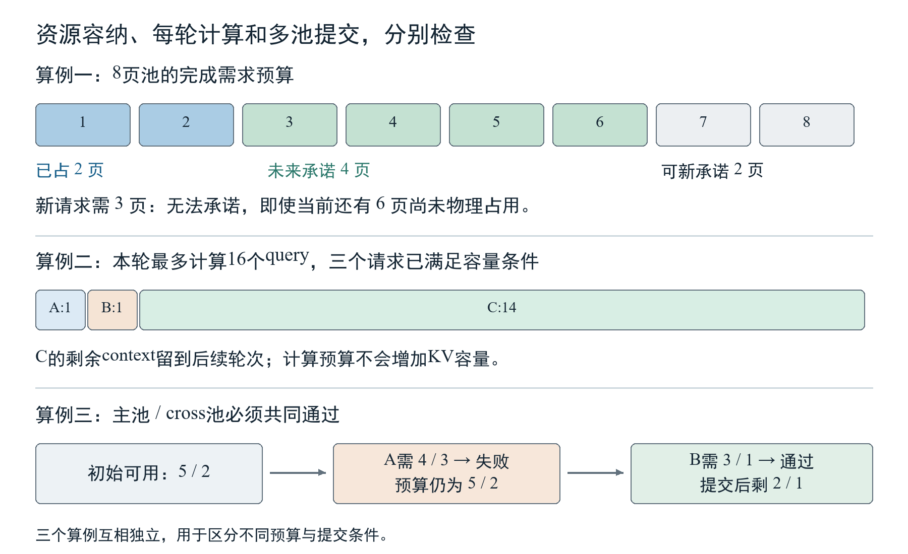

追踪请求槽位、异步缓冲和采样，并检查 CUDA Graph 重放依赖的地址与生命周期。
代码块旁的行号链接指向本课采用的提交，仓库及许可见课末。
1 从一个输出 token 反推引擎里谁在负责什么
假设服务正在处理一批对话：A已进入decode，B刚到达并命中部分前缀，C的长提示还差最后一个prefill chunk，D在本轮执行时被用户取消。模型forward只接受张量，无法独自决定谁先运行、缓存哪几页属于谁、取消后的输出是否还应发送。Serving engine需要把这些状态变化转换成一轮有效计算，并在结果返回后重新建立一致的请求状态。
沿一次生成迭代划分对象与责任
| 对象 | 保存或接收什么 | 下一步交付什么 |
|---|---|---|
| 请求与调度器 | token IDs、进度、停止条件、优先级；缓存可用容量 | 本轮请求集合、每请求query数量、页表增量 |
| 模型执行器与runner | 调度结果；模型、设备与持久状态 | 按本轮顺序排列的输入、attention元数据、hidden或采样输出 |
| 采样器与约束状态 | logits、采样参数、历史token、grammar mask | 被选token、可选logprobs、接受数量 |
| 结果处理与协议层 | 本轮输出、取消与结束事件 | 推进请求、释放或保留缓存、流式响应 |
代码 1 调度、执行与采样在源码中有独立接口
scheduler_output = self.scheduler.schedule(self._should_throttle_prefills())
if scheduler_output.total_num_scheduled_tokens > 0:
self.num_executed_steps += 1
future = self.model_executor.execute_model(scheduler_output, non_block=True)
grammar_output = self.scheduler.get_grammar_bitmask(scheduler_output)
with (
self.capture_iteration_details(scheduler_output) as iteration_details,
self.log_error_detail(scheduler_output),
):
model_output = self._wait_for_output(future)
if model_output is None:
model_output = self.model_executor.sample_tokens(grammar_output)scheduler_output是本轮计划。execute_model以non_block=True发起执行，返回future；采样可能通过独立sample_tokens入口完成。这里的None分支是接口协议的一部分，不能据此判断模型没有运行。
grammar mask可以在forward进行时准备，最终采样必须使用与已提交输出历史对应的mask。后文会看到结构化输出怎样限制流水线。
本轮返回后，core.py第726—731行先处理执行期间到达的abort，再调用update_from_output。GPU已经算出的token，并不自动获得发送资格。请求取消属于控制状态，计算完成属于设备状态，两者需要在结果处理边界汇合；否则可能出现取消后仍继续追加输出或重复释放缓存。
本课固定阅读vLLM的V2 GPU runner、SGLang的RadixCache与overlap循环，以及TensorRT-LLM的PyTorch executor调度路径。它们共享请求推进问题，具体状态结构与功能组合各有差异。文中只对引用提交作源码判断；时间、容量与请求轨迹均为教学算例。
↑ 返回知识点目录2 请求有稳定槽位 每轮 batch 另有排列顺序
连续batch每轮都会变化：新请求加入，旧请求完成，prefill变成decode，某些请求被抢占。如果把所有长期状态直接按本轮batch顺序摆放，每次排序都可能连带移动token历史、页表、采样参数和模型特有状态。MRV2给每个活跃请求分配一个稳定行号，再用本轮idx_mapping连接batch行与状态行。
代码 2 新请求领取槽位，并分别记录原始提示和本次重算输入
assert len(self.free_indices) > 0, "No free indices"
req_idx = self.free_indices.pop()
self.req_id_to_index[req_id] = req_idx
self.index_to_req_id[req_idx] = req_id
self.max_seq_len[req_idx] = prompt_len + max_tokens
self.prompt_len.np[req_idx] = prompt_len
prefill_len = len(all_token_ids)
assert prefill_len >= prompt_len, (
f"prefill_len {prefill_len} < prompt_len {prompt_len}"
)
self.prefill_len.np[req_idx] = prefill_len
self.total_len.stage_write_elem(req_idx, prefill_len)
self.all_token_ids.stage_write(req_idx, 0, all_token_ids)
self.num_computed_prefill_tokens[req_idx] = num_computed_tokens
self.num_computed_tokens_np[req_idx] = num_computed_tokens
self.num_computed_tokens.stage_write_elem(req_idx, num_computed_tokens)req_idx从free_indices取得；req_id_to_index和index_to_req_id提供双向映射。槽位稳定范围是当前活跃生命周期，完成或被移出后可以回收，不能把行号当作永不复用的请求ID。
prompt_len记录用户原始提示长度；prefill_len等于本次交给runner的all_token_ids长度。抢占后重算可能把已生成token也放进prefill，因此这两个长度不能混用。
例如用户提示100个token，已经输出20个后被抢占。恢复时可带着120个已有token重建KV：prompt_len仍为100，prefill_len为120；恢复计算期间，num_computed_tokens从已有缓存命中位置继续推进。若把120全当成用户提示，频率惩罚、prompt logprobs和输出计数就会失去原来的语义。
一个本轮顺序与稳定槽位不同的例子
| 请求 | 稳定状态行 | 已计算token | 本轮query数 |
|---|---|---|---|
| A | 7 | 100 | 1 |
| B | 2 | 60 | 本轮未选中 |
| C | 9 | 20 | 3 |
令本轮后端采用顺序[C,A]，则idx_mapping=[9,7]。读取batch第0行状态时必须访问持久表第9行；采样结果回写C时也使用同一映射。B保留第2行但不参与本轮。下一轮顺序改成[A,C]，映射改为[7,9]，长期token历史无需整体搬动。实际排序规则由后端和query形状决定，本例只演示间接寻址。
代码 3 本轮排序生成请求列表，再映射到持久状态行
draft_tokens = scheduler_output.scheduled_spec_decode_tokens
# batch_idx -> req_id
req_ids = sort_batch_req_ids(
num_tokens_per_req, draft_tokens, self.decode_query_len
)
numtoks_iter = map(num_tokens_per_req.__getitem__, req_ids)
num_scheduled_tokens = np.fromiter(numtoks_iter, dtype=np.int32, count=num_reqs)
idx_mapping_iter = map(self.req_states.req_id_to_index.__getitem__, req_ids)
idx_mapping_np = np.fromiter(idx_mapping_iter, dtype=np.intp, count=num_reqs)num_scheduled_tokens按req_ids同一顺序生成；idx_mapping_np也按该顺序查表。只重排其中一个数组，会把某个请求的query长度配给另一个请求，导致位置或KV访问错误。
states.py第64—65行还把CPU侧num_computed_tokens_np标为GPU真实进度的乐观上界。异步调度可以据此提前规划，但需要精确进度的GPU输入准备直接读取设备状态。调试推测解码或抢占时，先弄清日志中的计数是已提交值、预计值还是GPU当前值。

稳定槽位保存请求状态，本轮idx_mapping负责取数与回写。图中的槽位编号与token数量均为教学值。
↑ 返回知识点目录3 把不同长度请求拼成一个 token 平面
继续使用[C,A]，本轮query数量为[3,1]。将四个query压成连续token轴，query_start_loc=[0,3,4]，表示C占[0,3)，A占[3,4)。这是长度为请求数加1的前缀和；末项等于实际query总数，不能拿它当作每个请求的完整历史长度。
这里u是query_start_loc，m是idx_mapping，c是稳定状态表中的已计算token数；j从0到qi−1。C的历史已算20个，本轮位置为[20,21,22]，本轮结束的序列长度为23；A的位置为[100]，序列长度为101。最终positions=[20,21,22,100]、seq_lens=[23,101]，两个数组服务于不同维度。
代码 4 Triton从稳定状态行读取进度，再生成本轮位置和序列长度
req_state_idx = tl.load(idx_mapping_ptr + req_id)
num_computed_tokens = tl.load(num_computed_tokens_ptr + req_state_idx)
start = tl.load(query_start_loc_ptr + req_id)
end = tl.load(query_start_loc_ptr + req_id + 1)
query_len = end - start
seq_len = num_computed_tokens + query_len
tl.store(seq_lens_ptr + req_id, seq_len)
for i in tl.range(0, query_len, BLOCK_SIZE):
block = i + tl.arange(0, BLOCK_SIZE)
mask = block < query_len
pos = num_computed_tokens + block
tl.store(pos_ptr + start + block, pos, mask=mask)program_id对应本轮请求，req_state_idx才对应持久槽位。query_start_loc决定写入positions的平面区间；num_computed_tokens决定绝对位置。两套索引在这个kernel中汇合。
所有query都要完成模型前向，但通常只选需要预测的位置执行LM head和采样。假设C的3个query已完成提示末段，A进行常规decode，并且两者都只需一个输出logits行，则选取平面索引[2,3]，对应两个请求的最后query。若C仍处于提示中段，则后续输出会受采样需求或输出处理约束，不能把每段prefill尾部都当成用户可见答案。
代码 5 每个请求的logits位置由query尾部和所需logits数量决定
# Get the number of logits and draft tokens.
cu_num_logits_start = tl.load(cu_num_logits_ptr + batch_idx)
cu_num_logits_end = tl.load(cu_num_logits_ptr + batch_idx + 1)
num_logits = cu_num_logits_end - cu_num_logits_start
num_draft_tokens = num_logits - NUM_NEW_SAMPLED_TOKENS
# Compute the logits indices.
block = tl.arange(0, BLOCK_SIZE)
query_end = tl.load(query_start_loc_ptr + batch_idx + 1)
logits_start = query_end - num_logits
tl.store(
logits_indices_ptr + cu_num_logits_start + block,
logits_start + block,
mask=block < num_logits,
)num_logits来自另一组前缀和cu_num_logits。推测验证通常需要多行logits，不能固定选最后一行。query_end−num_logits给出本请求尾部窗口起点，窗口必须完整落在该请求的query区间内。
当最后采样token已驻留GPU时，后续decode输入可以直接从last_sampled_tokens读取。input_batch.py第454—459行只覆盖生成token对应的槽位，保留尚未计算的prompt尾部；这样CPU不必先把token取回再传给GPU，仍需维持设备上的生产者—消费者顺序。
代码 6 这个固定版本仍在CPU计算query前缀和，并异步传输
# Get query_start_loc.
# num_reqs_padded is None for PIECEWISE graphs (no request padding needed)
num_reqs_padded = batch_desc.num_reqs or num_reqs
query_start_loc_np = np.empty(self.max_num_reqs + 1, dtype=np.int32)
query_start_loc_np[0] = 0
np.cumsum(num_scheduled_tokens_np, out=query_start_loc_np[1 : num_reqs + 1])
# Pad for full CUDA graph mode.
# Some attention backends like FA3 require query_start_loc to be non-decreasing.
query_start_loc_np[num_reqs + 1 :] = num_tokens
query_start_loc = self.input_buffers.query_start_loc
async_tensor_h2d(query_start_loc_np, out=query_start_loc)np.cumsum与async_tensor_h2d直接表明这段元数据仍经过CPU。GPU-native描述的是逐步迁移输入准备工作的方向，不能据此推断当前实现消除了所有CPU计算或H2D。padding时尾部重复num_tokens，保持前缀和单调且不虚构额外有效query。
情境 请求 A、C 的槽位为 7、9，这轮按 [A,C] 拼接。历史长度 [101,23]，本轮 query 数 [1,2]，位置与输出行均从零起。
问题 写出槽位数组、query 前缀和、positions、更新后的 seq_lens 及尾 logits 行。
结论 依次为 [7,9]、[0,1,3]、[101,23,24]、[102,25]、[0,2]。
推导 槽位映射跟随批次，为 [7,9]。从零累计行数得 [0,1,3]，即 A 用行 0，C 用行 1、2；绝对位置为 [101,23,24]。旧长度加本轮行数得到 [102,25]，每个区间取最后一行，logits 索引为 [0,2]。
4 增量更新节省搬运 也引入了缓冲区的使用期限
相邻decode轮次通常只增加少量token或页表项。StagedWriteTensor先收集哪些行、从哪列开始、写哪些值，再用一次批量kernel应用这些差量。假设一张[1024,4096]的INT32表容量16 MiB，本轮只有32行各修改1个元素，有效值只需128 B；实际还要携带索引、起点和累计长度，并支付kernel启动成本。这个比较解释增量更新为何有价值，也说明极小更新未必获得按字节比例计算的加速。
代码 7 差量先进入缓冲池，再由GPU kernel写到目标表
def apply_write(self) -> None:
n = len(self._staged_write_indices)
if n == 0:
return
indices_uva = self.write_indices.copy_to_uva(self._staged_write_indices)
starts_uva = self.write_starts.copy_to_uva(self._staged_write_starts)
cu_lens_uva = self.write_cu_lens.copy_to_uva(self._staged_write_cu_lens)
write_contents = self.write_contents.copy_chunks_to_uva(
self._staged_chunks(), self._staged_write_len
)
# Write diffs to the GPU buffer
_apply_write_kernel[(n, _num_write_chunks(self._staged_write_max_len))](
self.gpu,
self.gpu.stride(0),
indices_uva,n是写入描述的数量。indices、starts和cu_lens共同界定每段更新，write_contents存放值。stage_write对NumPy数组或array.array可能只保留引用，调用者在apply_write完成取数前不能修改这些输入。
UVA是统一虚拟寻址。在这里，UvaBuffer先申请pin_memory=True的CPU tensor，再取得设备可访问视图；数据物理上仍在主机内存。GPU读它通常经过主机互连，带宽与访问延迟不同于HBM。它也不等同于让所有页面自动迁移的托管内存机制。不可用时，代码通过NonUvaBuffer及显式复制提供替代路径。
all_token_ids:[max_num_reqs,max_model_len]可以非常大：1024×131072×4=512 MiB，长度上限为1048576时达到4 GiB。因此默认将这类大而冷的数据放在UVA有容量动机；若ngram或suffix proposer频繁扫描活跃行，源码也提供密集设备驻留选择。配置应同时考虑访问频率和容量，不能只比较一次H2D的时间。
代码 8 缓冲池明确要求调用者在复用前结束该槽位的GPU读取
class UvaBufferPool:
"""Preallocate each slot at size, growing its first dimension as needed.
Callers must retire a slot's GPU readers before reuse, including growth.
"""
def __init__(
self,
size: int | Sequence[int],
dtype: torch.dtype,
max_concurrency: int | None = None,
):
if max_concurrency is None:
max_concurrency = _DEFAULT_MAX_CONCURRENCY
self.size = size
self.dtype = dtype
self.max_concurrency = max_concurrency
# UVA buffers for concurrency
self._buffer_cls = UvaBuffer if is_uva_available() else NonUvaBuffer
self._uva_bufs = [self._buffer_cls(size, dtype) for _ in range(max_concurrency)]max_concurrency决定轮转深度；文件开头要求它至少覆盖引擎同时在途的step数。池本身的round-robin不会自动证明某个读者已经结束，增长重分配也遵循相同约束。
设深度为2：step0使用快照X0，step1使用X1，step2再次使用X0。若step0的GPU读者尚未结束，CPU提前写入step2内容就会污染step0输入。正确性来自“槽位足够多＋对应读者已退休”的协议；把深度从2随意改成1会破坏协议，盲目增大深度又会提高主机锁页内存和在途状态开销。
UvaBackedTensor另保留一份CPU source of truth，每次提交把它复制到轮转快照。CPU可继续编辑下一版状态，已提交GPU读者仍看到它所属版本。讨论“没有复制”时必须标明哪一段：这里可以省去某次H2D，却仍存在CPU到CPU快照复制和GPU对主机数据的读取。
情境 GPU 异步读取 CPU 可见的双缓冲元数据。第三轮将写入第一轮使用的槽 0，主机只知道第一轮已经提交。
问题 写出允许覆盖的完成条件；若未满足，本轮有哪些选择？
结论 确认槽 0 的最后一个设备读者已退休，再覆盖；否则等待或取得其他空闲槽。
推导 列出读取快照 0 的旧提交及其设备完成事件。只有最后一个读者完成、相关引用都退休，主机才可写入新元数据。索引 2 mod 2=0 只给出候选位置；若事件仍在途，应等待或取得其他空闲缓冲。
5 异步返回以后 token 何时才真正能给 CPU 使用
non_block=True只说明调用尽早返回。需要区分三件事：CPU提交了执行；GPU完成forward与采样；D2H把输出复制到主机并可安全读取。future、CUDA stream和事件分别参与这些边界。把future创建时刻当成token已生成，会同时误导延迟统计与缓冲释放。
代码 9 跨stream输出复制需要保留GPU对象，并等待主stream的生产者
# NOTE(woosuk): We must retain references to the GPU tensors,
# as the copy operations are performed on a different CUDA stream than
# the one where the tensors were created.
self.model_runner_output = model_runner_output
self.sampler_output = sampler_output
self.num_sampled_tokens = num_sampled_tokens
self.pending_aux_output = pending_aux_output
# Blocking (sleep) event to avoid busy-polling the CUDA driver lock.
self.copy_event = torch.cuda.Event(blocking=True)
self._has_fault: torch.Tensor | None = None
self._has_fault_gpu: torch.Tensor | None = None
if check_ep_fault:
# Computed on the main stream: the copy stream only carries copies.
self._has_fault_gpu = get_ep_all2all_manager().query_fault()
with stream(copy_stream, main_stream):
copy_stream.wait_stream(main_stream)
self.sampled_token_ids = async_copy_to_np(sampler_output.sampled_token_ids)对象保存sampler_output等引用，使源tensor跨stream复制期间保持存活。copy_stream.wait_stream(main_stream)建立设备依赖；随后async_copy_to_np发起token复制。这个等待可以排在GPU时间线上，CPU不必在这里阻塞等全部复制完成。
代码 10 真正消费主机结果时等待copy事件
if self._has_fault_gpu is not None:
self._has_fault = self._has_fault_gpu.to("cpu", non_blocking=True)
self.copy_event.record(copy_stream)
def get_output(self) -> ModelRunnerOutput:
self.copy_event.synchronize()
# NOTE(woosuk): The following code is to ensure compatibility with
# the existing model runner.copy_event记录在复制stream上，get_output调用synchronize后才处理CPU结果。异步执行把等待移动到必要的消费边界，源码仍然保留这个明确同步点。
如果输入准备可直接使用设备上的上轮token，下一轮forward可以与上轮输出D2H或CPU协议处理重叠。EngineCore的batch_queue优先填充允许的在途工作，队列满或无更多可调度工作时再取最老结果；这并不允许同一个请求跳过自回归依赖。预先安排的设备操作仍需等前一轮采样或接受数产生。
教学流水线有CPU准备C=2毫秒、GPU执行G=6毫秒、独立复制与消费阶段D=1毫秒；串行单轮为9毫秒，理想稳态轮间隔下界为6毫秒，最长阶段占主导。处理4轮时，串行为36毫秒；无额外依赖或资源冲突的三阶段流水为2+4×6+1=27毫秒。首轮仍需9毫秒，不能用稳态吞吐倒推出首token延迟。
真实D可能与C共用CPU线程，拷贝也可能与attention争抢带宽；grammar更新、取消、抢占和推测接受数会增加依赖。此时max(C,G,D)只给出理想下界。优化要观察GPU空隙和等待来源，不能把所有wait删除后就认定吞吐会提高。

教学三阶段流水与缓冲复用依赖。异步可以缩短稳态间隔，输出可见性和旧读者完成仍需明确事件。
↑ 返回知识点目录6 SGLang 的 overlap 循环为什么还要防止写后覆盖旧读者
SGLang的overlap循环先接收请求、生成本轮plan并发起run_batch，再处理前一轮结果，最后按依赖发起本轮采样。结果处理可能修改请求索引、页映射或共享内存池，而本轮GPU可能还在读取这些共享结构。因此，两个CPU函数按顺序返回并不足以证明设备读写安全。
代码 11 当前轮已发起时，前一轮结果才进入处理
# Launch the current batch
if batch:
batch_result = self.run_batch(batch)
# Fence result processing behind this forward's shared reads.
self._apply_war_barrier()
self.result_queue.append((batch.copy(), batch_result))
else:
batch_result = None
self._sched_idled = True
# Process the last batch
if self.last_batch:
if not process_last_batch_early:
pop_and_process()batch.copy()保存与结果匹配的batch元信息，result_queue保留在途输出。run_batch之后立即建立WAR barrier，再允许旧结果处理改变共享状态。plan内部的running_batch与batch_to_run也分开保存。
代码 12 后续调度stream的写入必须排在本轮共享读取之后
def _apply_war_barrier(self):
# WAR: keep later schedule_stream writes behind this forward's shared reads.
# Clearing matters: a phase that skips the publish then falls back to coarse.
if not self._war_barrier_enabled:
return
runner = self.model_worker.last_shared_read_runner
ev = runner.shared_read_done_event
runner.shared_read_done_event = None
if ev is not None and not envs.SGLANG_FORCE_COARSE_WAR_BARRIER.get():
self.schedule_stream.wait_event(ev)
else:
self.schedule_stream.wait_stream(self.forward_stream)WAR表示write after read依赖：旧读者读完之前，新写者不能覆盖同一存储。已有精确shared_read_done_event时只等该事件；缺少精确边界时退回等待forward_stream。清空事件引用防止下一阶段误用旧事件。
假设forward总长6毫秒，但第1毫秒已经把所需页表读入私有元数据，后5毫秒只读稳定KV。若后端能够可靠声明共享元数据读取在1毫秒结束，调度写入就可从该边界之后开始。若还有KV offload拷贝依赖共享存储，单等元数据读取结束就不够。shared_read.py第33—41行因此为部分分层缓存与offload组合保留更粗的forward屏障。
这里的精细事件优化需要证明最后一个共享读者在哪里结束。只找到“构建attention metadata”的函数名，无法推出所有读者已经完成。分页整理、异步offload和图重放可能延长同一缓冲区的真实使用期限；后端新增功能后也必须重新维护这个契约。
结构化输出又引入另一条依赖：前一轮已接受token需要推进grammar状态，再生成下一轮mask。sg_scheduler.py第2285—2296行按需要提前处理结果，或在verify期间推进待处理的grammar。共享存储的读写屏障和语法状态的先后关系分别约束不同对象，不能互相代替。
↑ 返回知识点目录7 CUDA Graph 能否重放 要比较完整的 batch 描述
decode每轮执行许多短kernel，CPU逐个发起可能形成空隙。CUDA Graph把已捕获的设备工作与依赖作为整体重放，减少重复提交开销。图记录的调用结构、形状与地址需要保持有效；每轮请求内容和KV数据仍然变化，重放不会自动把上一轮答案复制出来。
代码 13 兼容条件同时检查query形状、容量、LoRA类别与microbatch划分
return (
(
desc.uniform_token_count is None
or desc.uniform_token_count == uniform_token_count
)
and (
desc.max_query_len is None
or (max_query_len is not None and desc.max_query_len >= max_query_len)
)
and (desc.num_reqs is None or desc.num_reqs >= num_reqs)
and desc.num_tokens >= num_tokens
and desc.num_active_loras == num_active_loras
and desc.num_ubatches == num_ubatches
)uniform_token_count限定每请求query数量；max_query_len限定最大query长度；num_reqs与num_tokens提供容量上界。None表示该描述在相应维度没有约束，不能把它当成数值0。
LoRA比较的是dispatch预先映射后的有效捕获类别，原始活跃LoRA数量可以先映射到足够大的已捕获档位。num_ubatches必须匹配，因为分成几份执行会改变调用与依赖结构。
4个请求各1个query与1个请求4个query，都有4个token，却对应不同attention元数据与decode/prefill结构。仅按总token数命中图可能产生错误。dispatch会优先尝试合适的uniform decode图，再找兼容的token档位；未找到时返回eager描述。性能排查应统计具体fallback原因，不能只看“已开启CUDA Graph”。
若5个常规decode请求使用8-request图，需要3个padding槽位。空槽占捕获容量的37.5%，相对实际5个请求增加60%的槽位数；真实额外计算量取决于kernel是否跳过空序列。input_batch.py第368—374行把未使用seq_lens清零，避免padding读到上一批遗留长度。隐藏有效长度或mask未更新，即使图本身能重放，也会读错缓存。
代码 14 从eager或piecewise切到full graph时仍需处理旧offload依赖
def run_fullgraph(self, desc: BatchExecutionDescriptor):
"""Replay a captured FULL cudagraph."""
assert desc.cg_mode == CUDAGraphMode.FULL, (
f"Expected FULL mode, got {desc.cg_mode}"
)
assert desc in self.graphs, f"No cudagraph for {desc}"
# Sync offloader before replay - needed when transitioning from
# eager/piecewise to full cudagraph (e.g., prefill → decode).
# The previous eager iteration's start_prefetch may have queued
# H2D copies on copy_stream that the graph's captured events
# cannot see. Without this, replay could overwrite static buffers
# while those copies are still in flight.
get_offloader().sync_prev_onload()
self.graphs[desc].replay()sync_prev_onload等待此前独立copy stream上的加载，随后才replay。已捕获图中的旧事件不能自动覆盖后来在图外新发起的所有复制；静态地址相同也无法证明旧写者已经结束。
增加捕获档位可以减少padding和eager回退，但会增加启动捕获时间、图状态及可能的内存占用。量化backend、LoRA组合、推测验证长度、DP padding与microbatch策略都可能扩大描述集合。先观察实际形状分布，再决定常见档位；把所有理论形状全部捕获，可能挤占本来用于KV的容量。
↑ 返回知识点目录CUDA Graph 实训：一次 decode 怎样反复提交
一轮 decode 要运行许多短 kernel。假如 GPU 在两个相邻 kernel 之间等 CPU 发下一条命令，把设备算术加快未必能填上这道空隙。CUDA Graph 将一段工作的节点与先后关系预先实例化，再用一次主机调用重复提交。先在 nsys 里找这种空隙，才能估计收益。
↑ 返回知识点目录01 从四个动作画出图
一次推理要将新 token ID 复制到设备，再运行 embedding、矩阵乘、取样。将每次 copy 或 kernel 画成节点，将“读者必须等写者”画成有向边。stream 中有序提交形成顺序；跨 stream 需要 event 或其他明确依赖。两条互不依赖的分支可以并行，真实调度仍受 SM、拷贝引擎、带宽及其他在途工作限制。
CUDA 的图定义、可执行图、一次实际运行占用的是三种不同资源。捕获记录操作，实例化验证拓扑及参数并生成 graphExec；重放把 graphExec 放到指定 stream，主机可继续工作。每次重放仍执行底层 kernel。nsys 在不同图跟踪粒度下能显示整图或节点；若开节点级跟踪，需另测观察开销。编译器的算子融合会改变 kernel 本身，Graph 可以重放融合后的程序。
情境 同一轮先从主机复制 token ID 到设备，然后 embedding 读 ID，GEMM 读 embedding。另有独立的统计拷贝。
问题 画出必须的依赖边，判断独立拷贝能否重叠以及受什么限制。
结论 主链是 H2D→embedding→GEMM；独立拷贝在依赖和资源允许时可重叠。
推导 按每个读者找最后写者。若独立拷贝放在同一顺序流，将被串行化；在另一流也需确认没有共享缓冲冲突，且有可用的拷贝引擎与带宽。
02 沿官方源码追一次 capture 与 replay
代码 13-1 捕获一个输入复制、两次规约与结果回传
// Begin capture: operations issued to stream1 are recorded, not executed.
cudaStreamBeginCapture(stream1, cudaStreamCaptureModeGlobal);
cudaMemcpyAsync(inputVec_d, inputVec_h, sizeof(float) * inputSize, cudaMemcpyDefault, stream1);
reduce<<<numOfBlocks, THREADS_PER_BLOCK, 0, stream1>>>(inputVec_d, outputVec_d, inputSize, numOfBlocks);
reduceFinal<<<1, THREADS_PER_BLOCK, 0, stream1>>>(outputVec_d, result_d, numOfBlocks);
cudaMemcpyAsync(&result_h, result_d, sizeof(double), cudaMemcpyDefault, stream1);
stream1 的记录顺序建立本例四个设备动作的依赖。主机输入地址和设备数组指针进入图参数，后续写新值前必须确认旧读者已完成。
代码 13-2 结束捕获、检查节点数与实例化
// The resulting graph is structurally identical to the one built manually.
cudaStreamEndCapture(stream1, &graph);
size_t numNodes = 0;
cudaGraphGetNodes(graph, NULL, &numNodes);
printf("Graph node count: %zu\n", numNodes);
// Instantiate the captured graph into an executable form.
cudaGraphExec_t graphExec;
cudaGraphInstantiate(&graphExec, graph, NULL, NULL, 0);
// Demonstrates cudaGraphClone — in practice, cloning is useful when multiple CPU得到 cudaGraph_t 后仍需实例化为 graphExec。将构建开销单独记录，稳态计时从可重放的图开始。
代码 13-3 填充原输入，重放图并等待本次读者退休
// Refill the host input before each launch so the graph's H2D copy processes
// new data every time — one instantiated graph reused for different data.
// The per-iteration sync ensures that copy finishes before we overwrite the buffer.
for (int i = 0; i < GRAPH_LAUNCH_ITERATIONS; i++) {
init_input(inputVec_h, inputSize);
cudaGraphLaunch(graphExec, streamForGraph);
cudaStreamSynchronize(streamForGraph);
}每轮向相同地址写入新的输入。只有上一轮消费者读完，主机才能覆写该缓冲。要让相邻批次交叠，可轮换使用独立缓冲，并给每份缓冲记录可复用的完成事件。
↑ 返回知识点目录03 从 CUDA 示例转到框架服务
PyTorch 的 torch.cuda.CUDAGraph 要求重放时相关内存地址仍然有效。用长期存活的 static_input 和 static_output，先在合适的 side stream 完成预热，预热流与捕获流显式衔接；捕获后把新值 copy_ 到原输入，再 replay。主机同步、依赖 GPU 返回值的 Python 分支以及不支持捕获的库路径会破坏普通 stream capture。初始化、懒分配、算法选择宜在预热中做完，框架受支持的 graph 内分配则依赖其内存池契约。
Python · 已预热且位于 CUDA 的推理模型
static_x = torch.empty_like(first_batch)
static_x.copy_(first_batch)
graph = torch.cuda.CUDAGraph()
with torch.cuda.graph(graph):
static_y = model(static_x)
static_x.copy_(next_batch)
graph.replay()
result = static_y.clone()在 inference_mode 或 no_grad 里运行上例，model 已切到 eval，输入的 shape、dtype 和 device 与捕获一致。本例后续 copy、replay 和 clone 在同一流上有序。clone 让结果可以跨下一次重放保存。若把 static_x 重新绑定为 next_batch，图继续读捕获时记录的指针。多流服务还需让生产者写完再 replay，并等消费者读完旧输出才复用其存储。
情境 捕获图时 kernel 参数指向设备地址 A，值为 3。下一轮把 Python 变量改绑到地址 B，B 的值是 8，A 未改变。
问题 重放会读什么？怎样让同一张图读入 8 并避免覆写在途数据？
结论 读 3。把 8 写入 A，安排在旧读者完成后、新重放开始前。
推导 已实例化的图保存设备指针。变量绑定只改 Python 引用。复用 A 要让生产者和消费者建立 stream 顺序或事件依赖；B 若必须成为实际参数，则走受支持的图更新或重捕获。
情境 同一个 static_y 被每轮 replay 覆写。主机保存旧输出的 tensor 引用，下一轮后发现两个结果一致。
问题 给出因果解释及两种安全保存策略。
结论 两个引用可指向同一地址。及时复制结果，或按在途数量提供独立缓冲。
推导 变量引用不复制存储。在下一轮写之前按流顺序 clone；多流时等旧写完才读，等拷贝或下游消费完成才复用。分别用两组不同输入对照 eager，并核对输出地址。
04 真实调度器怎样选图
代码 13-4 vLLM 的图分派与运行模式
return (
(
desc.uniform_token_count is None
or desc.uniform_token_count == uniform_token_count
)
and (
desc.max_query_len is None
or (max_query_len is not None and desc.max_query_len >= max_query_len)
)
and (desc.num_reqs is None or desc.num_reqs >= num_reqs)
and desc.num_tokens >= num_tokens
and desc.num_active_loras == num_active_loras
and desc.num_ubatches == num_ubatches
)把这里的模式和当前批描述一起读。在 serving 中，token 数相同的两批可能有不同的 query 布局、注意力元数据或适配器状态。分派按具体版本所支持的描述和 capture 范围决定。
设常见 decode 桶为 1、2、4、8、16，现有 9 个有效 token。若 backend 支持掩码和填充，放进 16 桶要多处理 7 槽，有效率 9/16=56.25%。填充槽要有安全地址且不能推进真实序列的长度，输出只取 9 行。若某个算子用真实长度决定主机控制流，考虑拆开成图内稳定区和图外动态区，或直接走 eager。记录命中率时还要记录桶内有效槽比例。
结论 取 16，9/16=56.25%；7 个假槽不能推进真实 KV 或序列长度。
推导 8 容不下，16 多 7 个空槽。输出切片只隐藏最终无效行，内部写页、修改序列长度也必须用正确掩码或安全占位，之后再对照 eager 输出。
05 捕获是否回本，要看实际命中次数
教学时间：eager 每轮 100 µs，图重放加输入准备 75 µs，首次捕获与实例化共 10 ms。一次节约 25 µs，需要 400 次恰好打平，第 401 次才有净收益。若只有 40% 请求命中此图，1000 个请求的 400 次命中也只是刚好收回构建成本；冷启动 SLO 另算。不同 bucket 的图及保留内存会挤占 KV 容量，服务端可能因此减少并发。
情境 捕获加实例化耗时 10 ms。eager 每次 100 µs，命中后含输入准备 75 µs；未命中走同成本的 eager。
问题 求打平和首次净收益的命中次数。40% 命中、1000 个请求是否已经净赚？
结论 400 次打平，401 次首次净赚；这 1000 个请求恰好打平。
推导 把 10 ms 换成 10000 µs，每次仅节约 25 µs。1000×0.4×25=10000 µs。若实例化在冷启动路径，仍需单独审核冷启动延迟。
06 用一对时间线区分填缝、融合和排队
相同请求轨迹下，分别捕获 eager 和 graph 的稳态窗口。先核对输出 token 或逐 element 容差；比较主机 API 调用数、GPU 工作间空隙、设备计算区间、每轮墙钟、graph hit/miss、padding 与 GPU 内存高水位。若 20 个小核的单核时长几乎不动，提交间隙明显减少，证据支持 launch 开销被摊薄。若 GPU 原本始终有待发工作，CPU 更快返回仍可能只增加排队深度。
异常定位从第一次出现差值的 token 开始。对齐参数版本、位置、KV 页表和 padding mask；固定随机数或比较采样前 logits；再比输入指针、流依赖和前后两轮的输出缓冲。只在高并发时错，优先检查覆写与复用事件。把 eager、单图单流、图加并发分开验证，每次只改变一个条件。
CUDA Programming Guide · CUDA Graphs
情境 同样 20 个 kernel 的 GPU 执行共 60 µs。原时间线中关键路径另有提交空隙 30 µs；graph 后空隙仅 8 µs，两组都没有其他关键路径工作。
问题 求端到端加速比，判断是否需要假设算术变快。
结论 90/68≈1.32 倍；执行时间相同，减少的是提交空隙。
推导 两组串行路径分别 60+30 和 60+8。若核之间有重叠应改算并集；在真实部署需比较无 profiler 的轮时、同批输出与命中率。
8 logits 到 token 之间还有一条有顺序的计算链
模型输出logits:[R,V]，R是本轮需要预测的行数，V是词表大小。logit只是未归一化分数。实际分布还取决于请求的logit bias、重复惩罚、禁词、强制结束规则、temperature与截断采样参数；不同请求的参数通过expanded_idx_mapping映射到各logits行，推测验证可能让同一请求对应多行。
代码 15 logits processor列表的顺序就是执行顺序
# List order is pipeline order: bias adds, penalties scale, so the
# two do not commute.
self.logits_processors: list[LogitsProcessor] = [
logit_bias_state,
self.penalties_state,
bad_words_state,
*custom_logits_processors,
]源码直接注明bias加法与penalty缩放不交换。bad_words与自定义processor也在这条管线里；修改列表顺序会改变采样分布，即便模型权重与输入完全相同。
用一个已出现token的正logit=2说明顺序：bias=1、重复惩罚系数2。先加再除得到(2+1)/2=1.5；先除再加得到2/2+1=2。它在softmax分母中的贡献不同，与其他token的相对概率也会改变。负logit的惩罚规则还需要按实际processor实现解释，不能把这个正数例子机械推广。
代码 16 processor之后处理强制标记、temperature和min-p
# Apply logits processors (native + any custom).
for processor in self.logits_processors:
logits = processor.apply(logits, ctx)
# Forcing runs last so no stage can overwrite the forced end marker
# or weaken it by scaling.
self.thinking_budget_state.apply(logits, ctx)
# Apply temperature in place.
self.sampling_states.apply_temperature(
logits, expanded_idx_mapping, idx_mapping_np
)
# Apply min_p in place.
self.sampling_states.apply_min_p(logits, expanded_idx_mapping, idx_mapping_np)强制结束标记放在普通processor之后，避免被后续自定义逻辑覆盖。temperature作用于logits，min-p随后过滤。调用sample时top-k/top-p可以暂缓，以便走融合采样路径。
T降低会放大logit差异，T升高会使分布更平坦；T=0在实现里走贪心路径，不能直接代入除法。top-k保留最高k项；top-p按概率排序，保留累计概率达到阈值所需的前缀；min-p以最高概率的一定比例设门槛。过滤后随机采样使用留下的相对权重。并列分数和阈值边界需要服从具体kernel规则。
取概率[0.60,0.25,0.10,0.05]。top-p=0.8保留前两项，总质量0.85，归一化后约[0.7059,0.2941]。若先将temperature设为0.5，相当于把原概率平方后再归一化，第一项约0.8276，此时同一top-p阈值只保留第一项。采样参数与执行顺序共同决定分布，性能比较也应固定这些条件。
sampler.py第301—312行限制融合FlashInfer/XPU sampler的使用条件：包含贪心请求、显式每请求seed、某些processed logprobs需求等情形会改变分派。同一个模型只改返回参数或seed设置，也可能换用kernel。研究吞吐差异时，需要记录采样路径，避免把变化全部归因于attention。
↑ 返回知识点目录9 Gumbel-Max 怎样抽样 又为何仍要扫描词表
给每个候选token一个独立Ui，均匀分布于(0,1)，令Gi=−ln(−ln Ui)。对zi/T+Gi取最大值，就以softmax(z/T)的概率选中token i。这允许直接在logits上加噪并归约，省去完整概率矩阵的写出；所有有效候选仍参与比较。
可以用指数竞争理解这个等价关系：Ei=−ln Ui服从单位速率指数分布，Ei/exp(zi/T)的速率为exp(zi/T)。独立指数变量中第i项最先到达的概率等于它的速率除以总速率，正好得到softmax。取最小Ei/exp(zi/T)，与取最大zi/T−ln Ei等价。
教学例子令概率为[0.6,0.3,0.1]，logits取各自自然对数，T=1，并指定U=[0.2,0.9,0.4]。三个噪声约为[−0.4759,2.2504,0.0874]，加噪分数约[−0.9867,1.0464,−2.2152]，因此本次选中第1号token，尽管原始概率最大的token为第0号。一次抽样可以选低概率项，长期分布才对应给定概率。
代码 17 固定源码分别处理FP64与FP32的Gumbel噪声
if temp != 0.0:
if IS_DRAFTING:
pos = pos + _DRAFT_NOISE_SALT
if USE_FP64:
u = murmur3_uniform64(seed, pos, keys)
gumbel_noise = -tl.log(-tl.log(u))
else:
u = murmur3_uniform32(seed, pos, keys)
# Draw the large-noise tail (which decides the argmax winner) from
# u -> 0, where fp32 has fine resolution. Avoid backend-specific
# log1p while preserving precision in the winning tail.
gumbel_noise = -tl.log(-_log1p_neg_stable(u))
logits = tl.where(mask, logits + gumbel_noise, float("-inf"))
return tl.max(logits, axis=0, return_indices=True)FP64分支使用−log(−log(u))；FP32分支使用针对log(1−u)的稳定实现，使决定胜者的大噪声尾部来自u接近0的一侧。1−U仍为均匀变量，两者在理想连续分布中等价；有限精度和具体随机数序列下的单次结果可以不同。
keys给token候选标识，pos与seed定位请求的随机序列；draft另外使用salt。调换batch顺序时，噪声身份应跟随请求与位置，不能跟随临时batch行号。
上面的手工U用于讲数学机制，没有声称复现该kernel的位级随机轨迹。固定seed仍不足以跨所有backend保证相同token：logits浮点误差、采样算法、精度、候选过滤以及随机数映射都可能改变胜者。正确性比较应先区分分布等价、确定性轨迹与逐bit一致三个目标。
融合Gumbel归约避免写出[R,V]概率表，但计算量通常仍随V增长。top-p需要确定概率质量，logprobs需要归一化常数，禁词或grammar还要更新候选集合；这些附加功能会改变内存访问和kernel数量。将“省掉softmax结果矩阵”理解为“采样只访问一个token”，会严重低估代价。
↑ 返回知识点目录10 返回五个 logprobs 为什么还要看完整词表
用户只要top-5 logprobs时，引擎可以先找最高5个logits，再为这些token及实际采样token输出归一化对数概率。由于softmax保持顺序，找top-k不必先构造全部概率。归一化分母仍然来自整个有效词表：只对top-5重新归一化，得到的是截断条件分布，含义已经改变。
代码 18 全词表归约分母，只写出所需候选的logprobs
se = 0.0
for i in range(0, vocab_size, BLOCK_SIZE):
block = i + tl.arange(0, BLOCK_SIZE)
logits = tl.load(row_ptr + block, mask=block < vocab_size, other=0.0)
# NOTE(woosuk): Make sure that logits and all following operations use FP32.
logits = logits.to(tl.float32)
e = tl.exp(logits - max_val)
e = tl.where(block < vocab_size, e, 0.0)
se += tl.sum(e)
lse = tl.log(se)
for j in range(0, topk, TOPK_BLOCK_SIZE):
k_offset = j + tl.arange(0, TOPK_BLOCK_SIZE)
k_mask = k_offset < topk
topk_ids = tl.load(
topk_ids_ptr + req_idx * topk_ids_stride + k_offset, mask=k_mask, other=0
)
logits = tl.load(row_ptr + topk_ids, mask=k_mask)
logits = logits.to(tl.float32)
o = logits - max_val - lse
tl.store(output_ptr + req_idx * topk + k_offset, o, mask=k_mask)外层循环扫描词表并累加exp(logit−max_val)；接着按topk_ids读取候选分数，减去同一个归一化常数。数值稳定的max_val来自该函数前面的全词表最大值归约。
令R=32、V=128000、FP32。完整logprobs表为32×128000×4=15.625 MiB；若每行只返回采样token和5个候选，数值输出只有32×6×4=768 B，另加token IDs与其他元信息。这个收益主要在结果矩阵与D2H输出，输入logits和词表归约仍然存在；重复候选还可能占据返回位置。
如果要求8192个prompt位置的完整词表分数，单份FP32矩阵为3.90625 GiB。只请求少量候选、分块计算prompt logprobs，或直接取目标token分数，可以限制峰值。生产中打开详细logprobs后出现显存增长、CPU序列化变慢或网络输出增大，应沿这一条路径核算，不能只增加KV容量参数。
raw_logprobs通常指模型原始分数对应的归一化结果，processed_logprobs对应经过采样处理后的分布，具体模式以引擎接口为准。返回值用于困惑度、打分或线上置信度时，必须确认bias、惩罚、temperature与过滤是否已经计入；将不同语义的logprob直接比较，结论无法成立。
↑ 返回知识点目录11 前缀相同的含义 要包括因果历史和模型条件
对因果Transformer，一个位置的KV由它能看到的全部历史决定。两段文本最后几个token相同，只说明后缀相同；若前面的系统提示、图像输入或adapter不同，相应hidden与KV可能不同。缓存键必须能区分这些会影响计算的条件。
代码 19 vLLM将父块hash、当前token块与附加键一起编码
if not parent_block_hash:
parent_block_hash = NONE_HASH
curr_block_token_ids_tuple = tuple(curr_block_token_ids)
return BlockHash(
hash_function((parent_block_hash, curr_block_token_ids_tuple, extra_keys))
)父块hash递归表示此前前缀。当前块token相同但父hash不同，会得到不同缓存身份。extra_keys承载当前块相关的额外条件；所选hash还需要满足系统的碰撞风险与确定性要求。
以块大小2为例，请求A=[1,2,3,4]，请求B=[9,2,3,4]。它们第二块均为[3,4]，但第一块不同，第二块的父hash因此不同，不能共享第二块KV。若只hash当前两枚token，会把两个不同因果历史混为一谈。相反，A=[1,2,3,4]与C=[1,2,3,8]可以共享首块，第二块分开。
hash.py第644—665行组合LoRA信息、多模态特征标识、cache_salt和prompt embedding相关键。salt只在首块加入也能通过父hash传播到后续块。引擎实例或缓存命名空间还需要固定模型版本、tokenizer/chat template及影响KV的配置；不能把“源码某函数没有直接写model revision”理解成跨任意模型均可复用。
SGLang的RadixKey也检查extra_key与cache_salt一致性。对多租户服务，salt可以提供显式的共享边界；若所有请求使用不同salt，缓存命中自然降低。业务隔离策略与缓存收益需要一起评估。对公开相同前缀和私有上下文，应由服务明确决定允许共享的范围。
前缀命中后仍需为新增query读取历史KV，还可能重算末块以产生logits。页大小、完整块约束、末token重算及模型特有状态决定最终复用长度。查询到一个匹配hash，只是进入复用路径的条件之一，还需要确保物理页有效且在本轮使用期间不会被回收。
↑ 返回知识点目录12 RadixAttention 把共享前缀组织成可分裂的树
普通trie每条边通常代表一个token；radix tree把连续无分叉的路径压成一条边，减少节点数。SGLang树中key保存token片段，value保存对应KV槽位索引。查询沿相同前缀向下走，发生部分匹配时把边切成公共前缀与剩余后缀，再返回命中部分的物理索引。
代码 20 树的value来自请求到KV槽位的映射行
kv_indices = self.req_to_token_pool.req_to_token[
req.kv.req_pool_idx, : len(token_ids)
]
radix_key = RadixKey(
token_ids,
req.extra_key,
is_bigram=self.is_eagle,
cache_salt=req.cache_salt,
).page_aligned(self.page_size)
if key_limit is not None:
radix_key = radix_key[:key_limit]
key_len = len(radix_key)
values = kv_indices[:key_len].to(dtype=torch.int64, copy=True)req_to_token_pool中的一行给出该请求各位置的KV索引；page_aligned限制键长度。values复制的是INT64索引向量，KV载荷存储在独立memory pool中。
代码 21 拆边会复制索引片段，并重接父子关系
def _split_node(self, key: RadixKey, child: TreeNode, split_len: int):
# new_node -> child
# New node inherits child's priority (represents shared prefix)
new_node = TreeNode(priority=child.priority)
new_node.hit_count = child.hit_count
new_node.children = {key[split_len:].child_key(self.page_size): child}
new_node.parent = child.parent
new_node.lock_ref = child.lock_ref
new_node.key = child.key[:split_len]
new_node.value = child.value[:split_len].clone()
child.parent = new_node
child.key = child.key[split_len:]
child.value = child.value[split_len:].clone()
new_node.parent.children[key.child_key(self.page_size)] = new_nodenew_node继承原节点的锁计数与相关优先级，再把key/value分成前缀和后缀。这里的value.clone()复制索引数组，不能据此推断所有层的K/V张量被完整复制。
先插入A=[1,2,3,4]，再插入B=[1,2,8]，取page_size=1便于观察。原边[1,2,3,4]拆为公共边[1,2]，其下两个分支为[3,4]和[8]。若已将重复前缀合并，主KV记录数为4+3−2=5，每请求仍有各自的逻辑序列。树结构中的索引复制开销与主KV节省量应分开记账。
如果page_size=2且两个序列的公共前缀为3个token，当前匹配只能复用向下取整后的2个token。树中多个token共用边并不解除物理页粒度约束。滑动窗口、EAGLE bigram或线性状态还可能采用额外映射；本节数例对应普通token模式，不能直接替代这些路径的长度语义。

两条请求共享[1,2]的KV记录。边携带token片段，节点value记录物理槽位，拆边调整索引与树结构。
这类结构适合具有长公共系统提示、few-shot示例或多轮分支的工作负载。命中收益取决于真实token前缀：在系统提示开头插入随机追踪ID，可能使后续很长内容都失去公共前缀；文本看上去相似、tokenization不同，也不会获得精确命中。应先检查请求构造，再归咎于缓存策略。
↑ 返回知识点目录13 请求结束以后 KV 可以继续缓存 但不能一直受保护
缓存价值来自请求之间的复用，因此一个请求结束并不要求立刻删除它留下的所有KV。另一方面，正在被活跃请求使用的前缀不能随意淘汰。SGLang通过树节点的lock_ref表示活跃使用关系，同时维护protected_size与evictable_size，两者描述缓存容量的不同部分。
代码 22 沿命中节点到根的路径增加引用，首次受保护时调整容量账
def inc_lock_ref(self, node: TreeNode) -> IncLockRefResult:
if self.disable:
return IncLockRefResult(delta=0)
delta = 0
while node != self.root_node:
if node.lock_ref == 0:
self.evictable_size_ -= len(node.key)
self.protected_size_ += len(node.key)
delta -= len(node.key)
node.lock_ref += 1
self._update_leaf_status(node)
node = node.parent
return IncLockRefResult(delta=delta)lock_ref从0变1时，该片段才从可淘汰容量移到受保护容量；从1变2不再次增加protected_size。多个请求共享前缀时，物理记录只计一次。每个祖先都要保护，否则删除公共前缀会破坏后代的有效因果历史。
继续使用五条物理KV记录的树。A使用[1,2,3,4]，B使用[1,2,8]：公共边[1,2]的lock_ref为2，两个独立分支各为1，受保护记录数是5。A结束后，公共边2→1仍受保护，分支[3,4]变成可淘汰2条；B仍保护公共2条和独有1条，总计3条。共享前缀的引用数与物理容量之间没有简单乘法关系。
代码 23 淘汰从可淘汰叶子开始，释放物理槽位，再考虑父节点
num_evicted = 0
while num_evicted < num_tokens and len(eviction_heap):
_priority, x = heapq.heappop(eviction_heap)
# Tree values are page-aligned copies of a kv row: page-exact segment.
self.token_to_kv_pool_allocator.free_segment(x.value, start_pos=0)
num_evicted += len(x.value)
self._delete_leaf(x)
if len(x.parent.children) == 0 and x.parent.lock_ref == 0:
new_priority = self.eviction_strategy.get_priority(x.parent)
heapq.heappush(eviction_heap, (new_priority, x.parent))heap按配置的eviction_strategy给出的优先级排列，不能把所有版本和所有配置都称作固定LRU。删除叶子后，父节点只有在没有孩子且lock_ref=0时才成为新的候选。
A结束以后若需要2条空间，可以淘汰[3,4]，剩余3条都由B使用；此时没有更多可淘汰容量。若新请求要求4条空间，单靠继续“加强缓存淘汰”无法满足，只能等待、改变准入、抢占或使用其他存储层。区分缓存未命中、可淘汰空间不足与活跃状态本身过大，才能找到正确的调度动作。
lock_ref属于逻辑生命周期，GPU读者是否结束属于设备执行生命周期。allocator将槽位重新交给新请求之前，两者都必须允许复用；前面介绍的stream/event依赖用于建立设备顺序。不能通过手工清零lock_ref来绕过容量不足，也不能只等某个CPU对象析构就假定所有GPU访问结束。
在共享缓存中还要区分索引表复制与主KV写入。给多个请求复制一份页表，只复制地址记录；若它们随后向同一未满尾页写入不同token，就需要独立页或copy-on-write。完整前缀块通常适合只读共享，尾部追加则需要按照具体allocator协议处理。
结论 共享页保留 B 的引用；独占页待引用归零且设备读者退休。
推导 沿路径撤销 A 自己的引用。共享前缀仍至少有 B 的一份引用，必须保留；A 独有且引用归零的后缀可进入淘汰候选。设备端还有旧读者时需再等完成事件，才能把同一物理页分给新请求。
14 结构化输出把 grammar 状态放进了自回归依赖链
JSON schema或语法约束通常先编译成可推进的匹配器。每个请求持有自己的当前状态：已经接受了哪些token、下一步哪些token仍有机会形成合法完整输出。采样前根据状态生成词表mask，将不允许的候选排除；采样后将被接受token送回匹配器，再决定下一步。
代码 24 接受token推进匹配器，推测回退需要同步回退grammar
def accept_token(self, token: int):
if not self.is_terminated():
self.current_token = token
accepted = self.matcher.accept_token(token)
if not accepted:
# log for debugging
raise ValueError(
f"Tokens not accepted: {token}\n"
f"Accepted tokens: {self.accepted_tokens}\n"
f"Key string: {self.key_string}"
)
else:
self.accepted_tokens.append(token)
def rollback(self, k: int):
self.matcher.rollback(k)
self.accepted_tokens = self.accepted_tokens[:-k]matcher.accept_token失败会抛出错误；成功后追加accepted_tokens。rollback(k)同时回退匹配器与已接受列表。推测解码只可提交实际接受的前缀，不能把被拒绝draft永久留在语法状态里。
代码 25 下一token的bitmask从匹配器生成，传到设备后应用于logits
def allocate_vocab_mask(
self, vocab_size: int, batch_size: int, device
) -> torch.Tensor:
return _allocate_token_bitmask(vocab_size, batch_size)
def fill_vocab_mask(self, vocab_mask: torch.Tensor, idx: int) -> None:
self.matcher.fill_next_token_bitmask(vocab_mask, idx)
@staticmethod
def move_vocab_mask(vocab_mask: torch.Tensor, device) -> torch.Tensor:
return vocab_mask.to(device, non_blocking=True)
def apply_vocab_mask(self, logits: torch.Tensor, vocab_mask: torch.Tensor) -> None:
if logits.device.type in {"cuda", "xpu", "musa"}:
if _is_hip:
apply_token_bitmask_inplace_cuda(logits, vocab_mask)
else:
apply_token_bitmask_inplace_triton(logits, vocab_mask)mask按请求行构造，再按backend使用相应kernel。词表token可能一次表示多个字符，也可能是某个字符的编码片段，合法性必须结合tokenizer与grammar判断，无法只把允许字符的字符码写成token ID。
A(s)是当前状态s允许的候选集合。以受限输出{"ok":true}为例，在冒号之后可用候选与刚完成true之后的候选不同；某个token还可能同时包含true和右括号，匹配器必须处理整段展开。语法保证的范围由schema和约束实现决定，合法JSON中的事实、业务权限与字段关系仍需应用层验证。
词表V=128000时，按每token 1 bit表示允许集合，需要16000 B；一行FP32 logits为512000 B。32个请求的mask约0.4883 MiB，logits为15.625 MiB。bitmask减小传输表示，但应用mask仍要读取和修改相应logits，编译grammar、推进状态与填mask也会占CPU时间。
异步流水中，forward通常只依赖已确定输入；采样还依赖最新grammar状态。vLLM core.py第806—809行在上轮结构化输出尚未处理时延迟本轮采样；SGLang也在必要时提前推进FSM。CPU可以尽量与forward并行生成mask，最终mask必须对应已经提交的历史。为了消除等待而使用旧mask，会把速度优化变成输出合法性错误。
如果所有候选都被过滤，服务需要把约束冲突当作明确异常处理，不能无条件对全负无穷logits执行常规采样并接受返回值。排查时记录schema、tokenizer版本、已提交token、回退长度和停止条件，有助于区分grammar错误、mask行错配与采样数值问题。
↑ 返回知识点目录15 TensorRT-LLM 先问能否容纳 再问本轮选谁
显存还能容纳某请求，不代表本轮计算预算足够处理它。TensorRT-LLM的SimpleScheduler把capacity scheduler与micro-batch scheduler分开：前者给出资源允许的候选与需要暂停的请求，后者在候选中决定本轮encoder、context与generation工作。当前代码位于PyTorch executor目录，部分缓存容量逻辑由C++组件实现；读取这一条路径时，需要同时追踪两种语言的状态。
代码 26 容量候选集合继续经过本轮组批选择
def schedule_request(
self, active_requests: RequestList, inflight_request_ids: set[int]
) -> SchedulerOutput:
active_requests = drop_decoder_context_requests_waiting_for_encoder_output(active_requests)
fitting_requests, fitting_disagg_gen_init_requests, paused_requests = (
self.capacity_scheduler.schedule_request(active_requests)
)
encoder_requests, context_requests, generation_requests = (
self.micro_batch_scheduler.schedule(fitting_requests, inflight_request_ids)
)
return SchedulerOutput(
encoder_requests,
context_requests,
generation_requests,
list(paused_requests),
list(fitting_disagg_gen_init_requests),
len(fitting_requests),
)fitting_requests进入micro_batch_scheduler，inflight_request_ids同时参与约束。SchedulerOutput还返回paused_requests和容量候选数量，所以不能用候选数量代替本轮实际执行请求数。
例如显存允许请求A、B、C共存，但本轮最多计算16个token：A需要1个decode token，B需要1个，C还有30个prefill token。某个允许chunking的计划可选A=1、B=1、C=14；下一轮再继续C。这个轨迹演示两个预算的区别，真实顺序还取决于优先级、context chunking策略、请求状态和其他资源。
trt_scheduler.py第1473—1480行会跳过inflight_request_ids中的请求，以及等待encoder输出的decoder context请求。在流水执行中，同一请求已经处于某个尚未退休的工作单元，不能仅凭“仍活跃”再次按普通路径安排。编码器输入还没准备好，也无法把decoder token预算直接用于它。
in-flight batching表示不同请求可以在迭代边界加入或离开，不要求整批所有请求同时完成。实现仍需知道某个请求处于哪一轮、哪种状态，以及当前KV和模型特有状态的所有权。不同引擎对在途的表示方式不同，不能照搬另一个框架的队列长度或状态枚举值。
TensorRT-LLM包含多种执行与kernel路径，量化格式、模型结构及硬件支持会进一步决定实际分派。本课使用调度器源码分析请求生命周期，不把项目名称等同于某个固定offline engine或某一种精度kernel。比较部署方案时应写明backend、模型实现、量化格式与固定版本，随后再比较可达到的服务指标。
↑ 返回知识点目录16 保留完成所需空间 与尽量填满当前资源 有不同后果
GUARANTEED_NO_EVICT策略在准入时考虑已接纳请求继续运行到完成还需要多少块。NoEvictScheduledBlocksManager从当前空闲块数建立预算，分别对各window size的池计算剩余需求；检查通过后才扣除本轮调度预算。这里的预算预留与立即分配所有未来物理页是两个动作。
代码 27 检查每种window池的完成需求，并暂存将要扣除的数量
bool enoughAvailableBlocks(
LlmRequest const& req, std::optional<PrefixReuseSummary> const& cachedSummary = std::nullopt)
{
mCachedNeededBlocks.clear();
bool enough = true;
for (auto const& [windowSize, availableBlocks] : mAvailableBlocks)
{
auto const needed = mKvCacheManager.getRemainingBlocksToCompletion(req, windowSize, cachedSummary);
mCachedNeededBlocks.emplace_back(windowSize, needed);
if (needed > availableBlocks)
{
enough = false;
}
}
return enough;getRemainingBlocksToCompletion提供需求估计；一个window池不够就不能通过。enoughAvailableBlocks只缓存计数，真正扣减在commitBlocks中进行，这有利于多个资源条件一起判定。
取单池教学模型，总容量8页，已运行A实际占2页，继续到完成还可能增加4页。当前空闲6页，但扣除A未来需求后，新请求可承诺的空间只有2页。若B到完成还需3页，它在保证不驱逐策略下不能进入；仅看“现在空闲6页”会误判准入。A若提前停止，未用到的预算可在后续调度重新释放出来。
该策略的代价是长max_new_tokens或保守需求估计可能降低并发，优势是在既定资源假设下减少已接纳请求因空间不足而被迫暂停。它仍不保证毫无排队、算力足够或任何故障下必定完成；这里的保证针对缓存容量策略。
代码 28 最大利用率策略按下一步需求及可选lookahead判断空间
std::optional<std::map<SizeType32, SizeType32>> prepareNewNumberOfBlocksIfWeEndUpScheduling(
LlmRequest const& req, std::optional<PrefixReuseSummary> const& cachedSummary = std::nullopt)
{
std::map<SizeType32, SizeType32> blocksIfScheduled;
for (auto const& [windowSize, numScheduled] : mNumScheduledBlocks)
{
auto const required
= mKvCacheManager.getNeededBlocksOneStep(req, mTwoStepsLookAhead, windowSize, cachedSummary);
TLLM_LOG_DEBUG("MaxUtilizationScheduler: request ID %lu required blocks %i for %i window size",
req.mRequestId, required, windowSize);
auto const scheduledTotal = numScheduled + required;
bool const hasFreeBlocks
= mKvCacheManager.getBlockManager().schedulingHasFreeBlocks(scheduledTotal, windowSize);
if (!hasFreeBlocks)
{
return std::nullopt;getNeededBlocksOneStep使用mTwoStepsLookAhead配置，与完成需求估计有不同时间范围。函数返回候选预算或nullopt；后续只有接受该调度决策才更新scheduled blocks。
MAX_UTILIZATION更积极地利用当前空间。若后续增长导致不足，capacity.cpp第609—627行会从候选尾部寻找已开始请求，模拟移除它的缓存并加入pausedRequests，再尝试调度。暂停后的实际状态保存、重算或恢复由后续执行路径负责；不能把这里的schedulingRemoveSequence当成已经完成了设备层面的释放。
多池资源必须同时成功。例如主KV池可用5页、cross-KV池可用2页，请求A需4页和3页，它整体失败时主池预算应仍为5；随后请求B需3页和1页，可以通过并留下主池2页、cross池1页。若先扣主池再检查cross池而不回滚，就会凭空损失容量。
代码 29 主KV、cross-KV与新LoRA的PEFT页一起通过后再提交
// Check block availability using the cached summary when available.
// enoughAvailableBlocks is check-only (no decrement) — safe if cross check fails.
bool enoughBlocks = reservedBlocks.enoughAvailableBlocks(*req, summary);
bool enoughCrossBlocks = true;
if (reservedCrossBlocks)
{
enoughCrossBlocks = reservedCrossBlocks->enoughAvailableBlocks(*req, crossSummary);
}
bool reqHasLora = req->getLoraTaskId().has_value();
bool isNewTask = reqHasLora && !uniqTaskIds.count(req->getLoraTaskId().value());
auto neededPeftPages = isNewTask && peftCacheManager ? peftCacheManager->determineNumPages(req) : 0;
if (enoughBlocks && enoughCrossBlocks && neededPeftPages <= availablePeftPages)
{
scheduledRequests.emplace_back(req);
++numAdmittedRequests;
// Decrement using the cached values computed by enoughAvailableBlocks.
reservedBlocks.commitBlocks();
if (reservedCrossBlocks)
{
reservedCrossBlocks->commitBlocks();
}
availablePeftPages -= neededPeftPages;enoughBlocks和enoughCrossBlocks先检查，neededPeftPages也参与条件；全部满足才commitBlocks。共享同一LoRA任务的请求需要考虑适配器复用，不能把每请求页数机械相加。

完成需求预留和当前计算预算是两个关口。多种缓存池的检查先共同通过，再提交预算扣减。
情境 页池共 8 页，已用 2 页，另有 4 页已承诺给在途请求。新请求还要 3 页，计算 token 预算充足，策略禁止抢占。
问题 求还能承诺几页，决定是否准入，并给出理由。
结论 尚可承诺 2 页，差 1 页，暂缓准入。
推导 可承诺容量为 8−2−4=2 页，小于 3 页，差一页，当前应等待。100 个 token 属于本轮计算预算，不能换成物理页。若策略允许抢占才可改换准入规则，并计入后续重算和用户等待。
17 有前缀复用时 chunk 大小与实际计算量仍要分开
缓存命中会减少需要计算的context token，但调度器里名为chunk_size的值未必已经扣除了复用部分。当前TensorRT-LLM路径中，设置prepopulated prompt会把chunk窗口向右移动；非末段通常仍计算一个完整chunk，只有最后一段才被剩余未复用长度截短。
代码 30 根据chunk窗口是否已覆盖剩余context，计算实际forward token数
def _reuse_adjusted_compute(chunk_size: int, reusable: int, context_remaining: int) -> int:
"""Return the forward-pass token cost for a context chunk with KV cache reuse.
setPrepopulatedPromptLen shifts the chunk window right by the prepopulated
amount rather than shrinking it. For non-last chunks the model still
processes approximately *chunk_size* tokens; only for the last chunk is the
cost *context_remaining - reusable*.
"""
if reusable <= 0:
return chunk_size
if reusable + chunk_size < context_remaining:
return chunk_size
return max(0, context_remaining - reusable)reusable≤0时直接返回chunk_size。reusable+chunk_size仍小于context_remaining时，复用只移动窗口，本轮仍算chunk_size；否则实际未复用长度为context_remaining−reusable，最低为0。
例一：context_remaining=1000、reusable=600、chunk_size=128。600+128<1000，所以该chunk仍计算128个query，不能算成max(128−600,0)=0。例二：remaining=700，其余相同，则只剩100个未复用token；第三种remaining=600可得到0个context计算token，但上层可能仍要求至少一次预测工作。
源码第1511—1525行只在first context chunk使用estimated_reusable_tokens；无chunking分支把实际context成本与draft token数相加，并取至少1。draft属于新验证工作，复用前缀不能把它抵扣掉。若只统计请求原始prompt长度，缓存命中后的计算预算会严重失真。
还要记得“实际query数量相同”不代表耗时相同。128个新query面对600个历史token，与面对60000个历史token，需要读取的KV和attention配对数不同；MoE路由与多模态encoder也会改变工作量。token预算是实现中便于控制的近似量，生产调度还应结合实际prefill/decode耗时与尾延迟观察。
读调度日志时保留四个不同的数量
| 数量 | 含义 | 混用后的常见误判 |
|---|---|---|
| 原始prompt长度 | 用户输入或模板展开后的token数 | 命中后仍按原长估计全部GEMM工作 |
| 可复用长度 | 合法且有效的缓存前缀 | 把命中视为无需任何计算 |
| 本轮实际query数 | 当前forward处理的位置数 | 忽略历史长度对attention的影响 |
| 当前或承诺的KV页数 | 物理容量与未来增长预算 | 把token计算预算当成显存保证 |
18 把线上现象还原到一条可核对的状态路径
工程排查可以从最小的一段请求轨迹开始：记录请求ID、本轮batch行、持久槽位、query数量、精确或预计进度、KV映射变化、采样路径及输出完成事件。随后把异常发生前后的状态连起来。只有吞吐总数时，缓存命中变化、重算增加和CPU阻塞常常长得很像。
四类现象对应的具体检查位置
| 现象 | 先沿哪条路径核对 | 可能的调整与代价 |
|---|---|---|
| 短decode吞吐低，GPU有间断 | CPU准备→H2D/UVA→graph命中→采样→输出消费 | 减少重复元数据工作或提高常见图覆盖；增加在途深度也会增大内存和状态复杂度 |
| 重复长提示仍慢 | token前缀与namespace→有效页命中→实际query→历史读取 | 稳定提示模板、修正共享边界；更高命中率仍无法消除新增query对历史的访问 |
| 平均吞吐高，少数请求停顿明显 | 准入与暂停→重算→chunk长度→结果等待 | 限制单轮context占用或采用较保守准入；可能降低峰值吞吐 |
| 只在JSON或logprobs模式变慢 | grammar推进→mask→sampler分派→词表归约→D2H | 复用已编译grammar、限制返回量；保持输出语义和约束正确性 |
比较vLLM、SGLang和TensorRT-LLM时，固定模型权重及量化、tokenizer与模板、请求到达过程、输入输出长度、采样和返回参数，再分别报告TTFT、ITL/TPOT、goodput、缓存命中和暂停重算。热缓存与冷缓存、显式seed与默认随机采样、启用与关闭logprobs不能混成一个“引擎速度”数字。具体支持情况需以所部署版本的代码与配置为准。
至此可以沿同一请求核对：缓存身份决定能否共享，引用与事件决定何时能复用存储，调度预算决定何时计算，runner映射决定算谁，采样和grammar决定输出什么。下一课进入分离式推理时，这些对象会跨进程和跨设备传递，KV传输完成、远端所有权与失败恢复将成为新的边界。
vLLM官方MRV2设计介绍（2026-03-24，历史设计背景；实现以本课固定源码为准）
SGLang原论文：frontend/runtime、RadixAttention与结构化程序
↑ 返回知识点目录